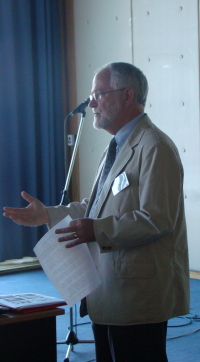

|
 |
USING MULTIMEDIA INSTRUCTIONAL MATERIALS: BEST PRACTICES FOR THE TEACHING OF PSYCHOLOGYThe content of psychology courses is constantly evolving, and the instructional methods and tools used in those courses have also evolved, reflecting shifts in both the preferred pedagogical approaches and in the technology available to the instructor and students. This presentation will focus on four lessons learned from three decades of research and classroom experience using interactive computer-enhanced instruction. Each of these lessons will be demonstrated with examples of instructional materials used in the classroom or as individual learning activities. 1) Multimedia materials can enhance learning. Early research on the effectiveness of multimedia and computer-based learning yielded disappointing results. However, recent studies have demonstrated that multimedia materials can improve learning and retention of information presented during a class session or an individual study period, as compared to “traditional” lectures or study materials that do not incorporate multimedia. Researchers attribute some of this improvement to a multimedia effect based on dual coding of the information presented in two or more different modalities (visual plus auditory, or text plus images), leading to increased comprehension of the material during the learning session and improved retention of the material at later testing times. In addition, multimedia materials (especially animations and video clips) have been found to increase students’ interest in the lesson topic and their motivation to learn. 2) Careful design of multimedia materials is important. There is general agreement that multimedia instruction is most effective when the different types of media support one another rather than when superfluous sounds or images are presented for entertainment value—which may induce disorientation and cognitive overload that could interfere with learning rather than enhance learning. 3) Video materials have the greatest impact on student interest in the topic, but don’t always lead to the greatest improvement in comprehension. Students love to watch video clips portraying individuals with psychological disorders or re-enactments of classic experiments, but often fail to understand the connection between the events in the video clip and the key psychological principles that are illustrated by the clip. 4) Interactive animations are the most pedagogically effective form of multimedia. One of the most important benefits of the computer in education is its capacity to show dynamic processes unfolding over time. For example, a “slow motion” animation of neurotransmitter release and re-uptake in the synapse may help the student understand a complex and very rapid process better than any other form of instruction. Converging evidence from research supports the use of multimedia instructional materials (a) To raise interest level – students appreciate (and often expect) a variety of media, and students appreciate “hands-on” learning activities. (b) To enhance understanding – multimedia materials combined with self-paced, repeatable instructional guidance increase student comprehension of complex topics, especially dynamic processes that unfold over time. (c) To increase memorability – multimedia materials lead to better encoding and easier retrieval. (d) To expand instruction – computer-based homework assignments can provide in-depth coverage of topics not mentioned in class, or in formats not feasible in a large group session. |
© 2008 Victor Karandashev